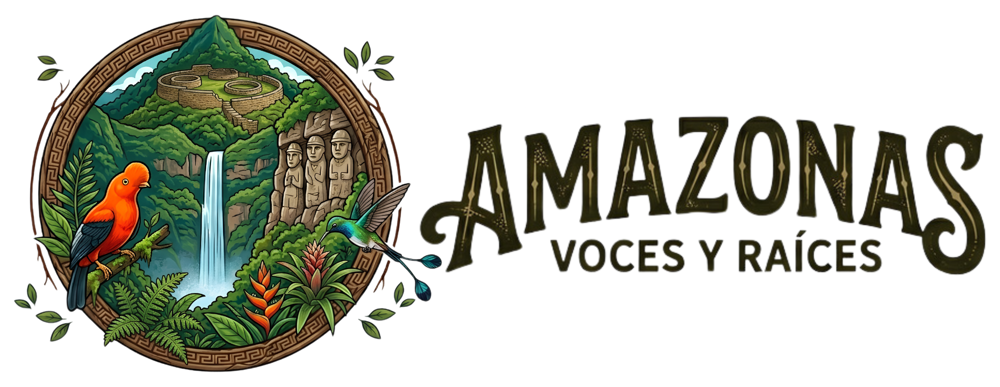

Cultura, naturaleza, turismo y tradiciones en un solo lugar.
ExplorarAmazonas Voces y Raíces es un blog dedicado a promover la riqueza cultural de la región Amazonas, resaltando sus tradiciones, artesanías y el talento de sus comunidades.
Más de miles de especies vegetales.
Aves, mamíferos y especies únicas.
Catarata Gocta, Kuélap y mucho más.
📧 amazonasvocesyraices@gmail.com